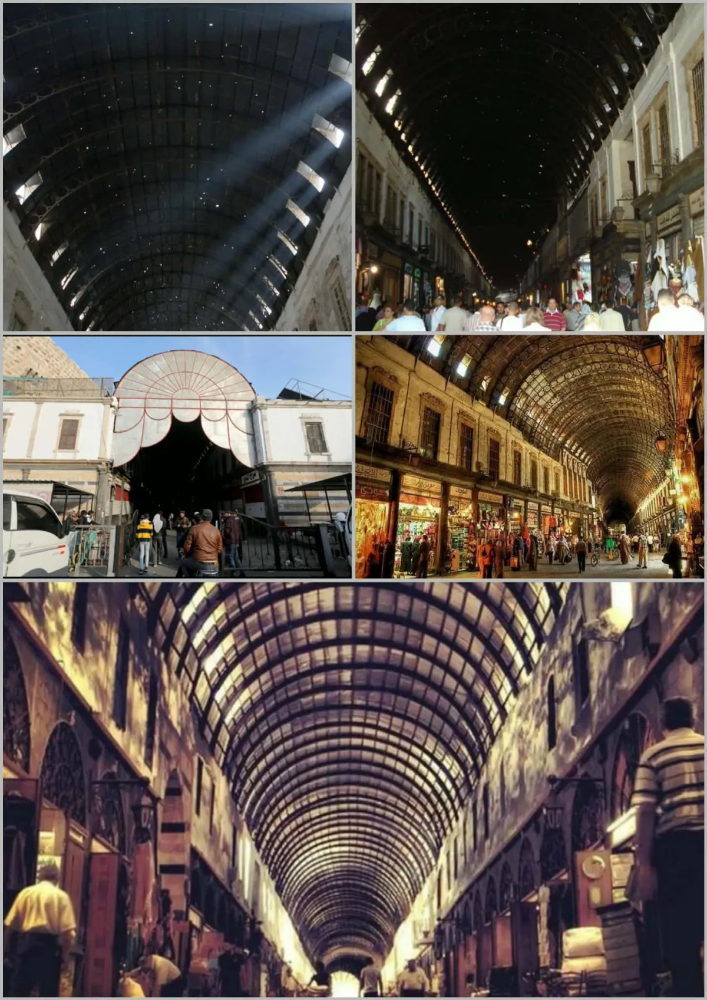
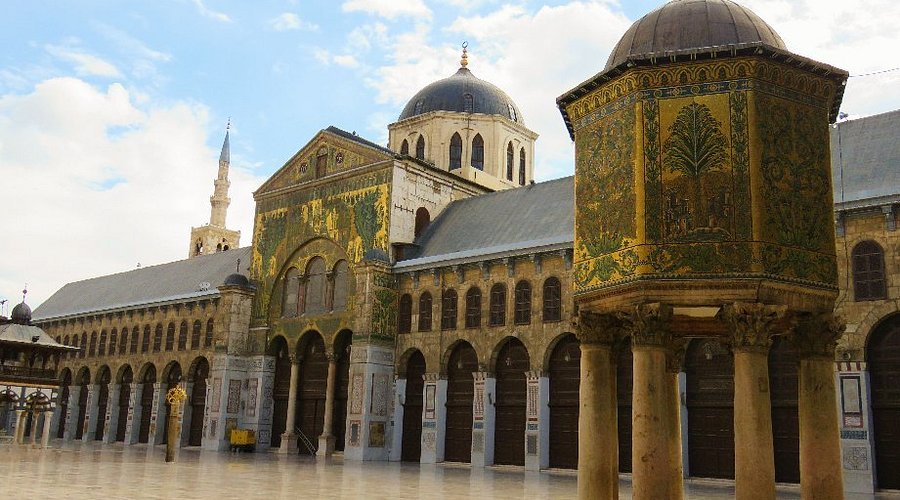

Famous Food
- Hummus
- Tabbouleh
- Shakriyeh
- Fattoush
- Damascus Sweets
Damascus is the capital of Syria and one of the oldest continuously inhabited cities in the world. It is famous for its rich history, beautiful architecture, traditional markets, and delicious food.

